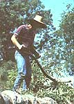
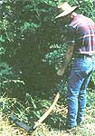
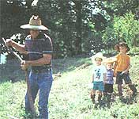

When my Jari sickle mower broke down I went to the dealer for parts. "We're about out of Jari parts;" he told me, "but I can order them for you."
"All right," I said, "I'll check back in a week." Which I did, only to find out that the parts hadn't arrived. I called again the next week.
"Yeah, they're here;" he said. But when I got to the shop, only half of what I needed had come in.
It went on like this for several weeks, and finally - after having gotton all the parts, but then not having the right tools to make the repair - I began to feel the weight of the city weed ordinance upon my conscience. I decided to borrow a scythe.
Now, I had used a scythe before, eight hours at a time, cutting fescue and weeds in my grandfather's nursery. But somehow, after working with the scythe again on our acre, I began to realize certain qualities about this tool that had eluded me before, qualities that make it, I think, an indispensable tool for cutting grass and weeds on a small plot.
To begin with, a scythe is economical. The "snath," or handle, costs from $30 to $65, depending on the type: wooden, straight or aluminum. Blades are available in different lengths (short for briars and bushes, long for grasses); they run $30 to $50. A good whetstone (a necessity) costs $5. And a scythe hammer and anvil (optional) costs $45. That puts the entire package at $65 to $165. Certainly, this is not a small price for such a simple implement, but compared with a sickle mower at $1,500, or a low-end string trimmer at $150, it is manna from heaven.
A scythe is also made to last. It's guaranteed to start for the next fifty years (or as long as you do), has no expensive parts to replace and no complicated repairs. It is a durable, hardworking tool. Sickle mowers, on the other hand, often victims of their own violent motion, typically endure for 10 to 15 years. String trimmers, with their small, hard-worked motors, are usually exhausted at five. Add to this the expense of fuel and oil, and a scythe, which runs on whatever you had for breakfast, makes even more sense for smaller plots.
Second, a scythe is easy to use. It is a light, well-balanced tool, especially effective on steep or rough terrain. Years ago the rule was: One man could cut one acre a day. So if you need to get inside to see the game in two hours, you might want to grab your mower keys and the gas can. And I'm not saying, of course, that using a scythe is like eating ice cream; it is work, hard work. But because the scythe is not "running," you can rest the blade on the ground, even lean on the handle if you need to relax for a moment. It is infinitely accommodating to the limits of the human body.
Third, a scythe is a pleasure to use. For one thing, it requires a certain steadiness and measured swing. Getting the hang of scything is like learning to ride a bike. Sharpening, too, takes effort and consideration. The hammer and anvil method, in particular, differs from merely using a file, in that it "stretches" the blade into its proper form, thereby preserving the life of the tool.
A scythe is also quiet and clean. You don't think of this so much until you actually use it. But the contrast is like night and day. With a weed eater it's the unrelenting buzz of a two-cycle engine, flying debris, and the smudge and smell of exhaust fumes. With a scythe it's the pleasure of being aware of your surroundings while you work. You hear the crows in the big oaks and your children across the way. You can even wear your clothes the rest of the day.
Finally, scything is a pleasure because it conveys a sense of history. As John Vince, author of Old Farms (Schocken Books, 1986), writes, "There is something elemental about re-encountering the things you once used or saw your grandparents using. To take hold of a scythe is to take hold of the past. It is to relive and affirm the rhythms and honest toil of our forebears."
And in an age characterized by the constant intrusion of technology, scything is, for me, an affirmation of the wisdom of simplicity.
Lehman's Hardware and Appliances
A.M. Leonard Inc.
The Marugg Company
|
 MOTHER EARTH NEWS STAFF A scythe is an economical tool that's easy to use and maintain. |
 MOTHER EARTH NEWS STAFF The old rule was: One man could cut one acre a day. |
 MOTHER EARTH NEWS STAFF Tim with sons Caleb (5), Asher (3) and Micah (2). |
|
MOTHER EARTH NEWS STAFF Resting in the shade after a good afternoon's work. |
|
|